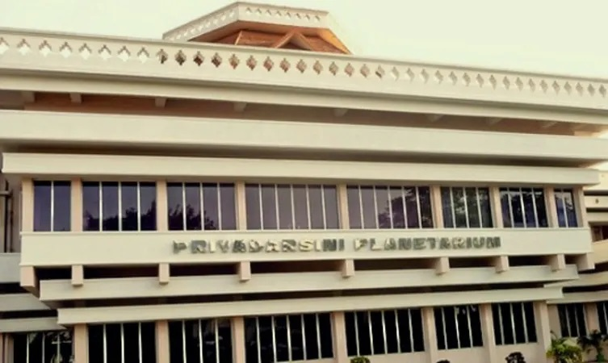
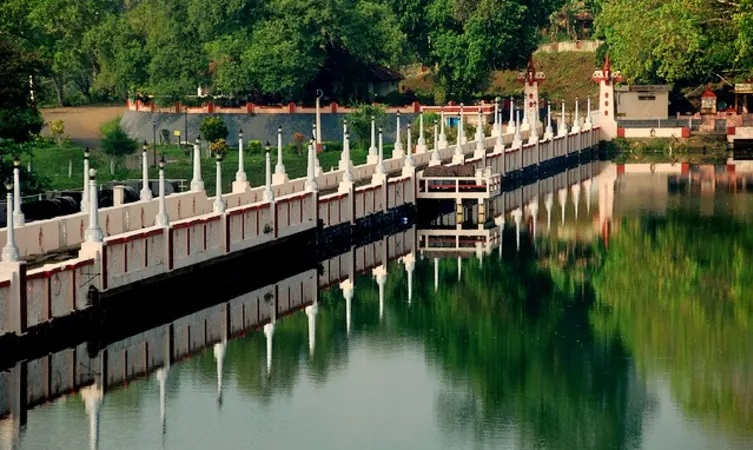

1.Kuthiramalika palace
1.Kuthiramalika palace
Located adjacent to Padmanabhaswamy Temple, Kuthiramalika Palace Museum is the rarest specimen of workmanship. Built by Maharaja Swathi Balarama Varma, this palace displays valuable collections of royal family.
Beside the rich collection that it displays, this museum is an exemplary example of traditional Travancore-style architecture. Intricate wood carvings and distinctive patterns constitute a masterpiece of its kinds. Overhanging attics, pillar-lined courtyards and sloping roofs contribute to the exclusive look of the museum
Visitors can expect a display of a collection, including Belgian mirrors, paintings, Kathakali mannequins, exquisite traditional furniture. The two royal thrones; one manufactured of Bohemian crystals, embossed with an emblem of ‘Conch’ on the backrest and the other made of ivory are the prime attractions of the museum. Marble-made idols and sculptures, musical instruments and the alcove used by Swami Thirunal have also been kept in the showcase. An illusion portrait by veteran painter Sveroslav Roerich is another attractive feature here.
LOCATION: trivandrum
TIMIMGS: 8.30 AM to 1.00 PM and 3.00 PM to 5.30 PM.

2.priyadharshini planetorium
Ranked among the most versatile planetariums in India, the Priyadarshini Space Planetarium was opened to public in 1994. It is fitted with advance equipment that allows the projection of all the constituents of universe. This planetarium imparts valuable knowledge about earth and the enormous universe that we all are part of. Simulating the star-studded night sky on any earth location is its most attractive feature.
The museum is situated in the campus of Kerala State Science and Technology Museum. Blessed with a unique blend of architecture, it is oriented horizontally which has a dome-type ceiling used as a screen for the images of celestial bodies. Astronomical phenomena are projected with the help of ocular device. There is a sky theatre, where several planetarium shows are conducted.
One of the major shows held here is ‘The Man and the Universe’, displaying evolving stages of astronomy, constitution of planets and finally the origin of Universe
LOCATION: trivandrum
TIMIMGS:some special events for groups at 10.30 AM, 12.00 PM, 3.00 PM and 5.00 PM.
 3.kovalam beach
3.kovalam beach
Epicentre of tourist flow, Kovalam Beach needs no introduction. This water delight seizes the top position in the list of tourist places in Trivandrum. Often crowded with both local and foreign tourists, it is located 13km away from the city.
Kovalam Beach is the treasure chest of multitude of adventure activities. Along with the sessions of para-sailing, diving and wind surfing, the beach also allows you to go on a leisure walk and offers a playful swimming time. Tourists have a choice to opt for lounge chairs to just sit and gaze at the most extraordinary sunrises and sunsets. The gleaming blue water and silver sands offers a quality time to enjoy nature at its best.
There are many beach resorts that offer customized services. From lip-smacking dishes to allocation of rooms, these retreats have impeccable services which one can easily avail. The well-trained staff offers comfortable and convenient environment. Assisting in planning a day on the beach, the stays take special care of the guests. It would be ideal to book in advance in order to avoid inconvenience.

4.Neyyar Dam and Wildlife Sanctuary
There are indeed number of things to do in Trivandrum, including paying a visit to picturesque Neyyar Dam and its neighbouring wildlife sanctuary. Built in 1958, the dam is an ideal family picnic spot which is set against the mesmerizing landscape. It is built where rivers like Neyyar, Kallar and Mullayar confluence. The area is famed for obtaining several medicinal herbs as well.
In the vicinity of this place, a wildlife sanctuary is well laid out. There are deer safari parks, crocodile and lion farms along with watchtower in the region. A guided trek, safari and elephant ride is a must here. Take out at least a day in order to get the best experience of the wild life sanctuary.